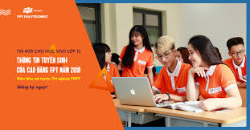

Chào Mừng Đến Trường Cao Đằng FPT PolyTechnic
Cơ sở đào tạo tại Hà Nội
Địa chỉ: Tòa nhà FPT Polytechnic, phố Trịnh Văn Bô, phường Phương Canh, quận Nam Từ Liêm, TP Hà Nội
Đóng góp ý kiến cho hoạt động của trường, sinh viên FPoly nhận ngay phần thưởng
Home / Hoạt động sinh viên / Tin mới nhất / Tp. Hồ Chí Minh
Đóng góp ý kiến cho hoạt động của trường, sinh viên FPoly nhận ngay phần thưởng
16:49 08/10/2018
Không chỉ được lắng nghe và thực thi đóng góp vào thực tiễn, sinh viên Cao đẳng FPT Polytechnic Hồ Chí Minh còn được nhận được
phần thưởng xứng đáng với “Sáng kiến sinh viên” của mình.
Qua cuộc thăm dò được đề xuất vào ngày 28/09/2018
trên trang fanpage Cộng đồng sinh viên FPT Polytechnic, ý kiến
“Đăng ký gửi xe tháng” và “Tổ chức tham quan doanh nghiệp cho K13.3”
đã nhận được bình chọn cao nhất của sinh viên.
Ngày 04/10/2018 vừa qua, thầy Trần Vân Nam – Giám đốc Cao đẳng FPT Polytechnic Hồ Chí Minh
đã trao phần thưởng cho 2 sáng kiến mang tính ứng dụng cao này.
Tại Cao đẳng FPT Polytechnic, Ban Giám đốc luôn luôn
lắng nghe ý kiến của sinh viên, nỗ lực hết mình để nâng cao dịch vụ
chất lượng cho sinh viên có môi trường học tập thoải mái và
tốt nhất khi đang học tập tại trường. Sinh viên Cao đẳng FPT Polytechnic
được đưa ra ý kiến của mình về các hoạt động triển khai trong học kỳ.
Thông qua cuộc thăm dò ý kiến, Ban Giám đốc sẽ xem xét
và lựa chọn ra ý kiến phù hợp nhất để triển khai thực tế vào học kỳ.
Qua cuộc thăm dò được đề xuất vào ngày 28/09/2018
trên trang fanpage Cộng đồng sinh viên FPT Polytechnic,
ý kiến “Đăng ký gửi xe tháng” và “Tổ chức tham quan doanh
nghiệp cho K13.3” đã giành giải về ý kiến có lượt bình chọn
cao nhất với giá trị giải thưởng hấp dẫn là 500.000Đ và 300.000Đ.
Home / Hoạt động sinh viên / Tin mới nhất / Tp. Hồ Chí Minh
Đóng góp ý kiến cho hoạt động của trường, sinh viên FPoly nhận ngay phần thưởng
16:49 08/10/2018
Không chỉ được lắng nghe và thực thi đóng góp vào thực tiễn, sinh viên Cao đẳng FPT Polytechnic
Hồ Chí Minh còn được nhận được phần thưởng xứng đáng với “Sáng kiến sinh viên” của mình.
Qua cuộc thăm dò được đề xuất vào ngày 28/09/2018
trên trang fanpage Cộng đồng sinh viên FPT Polytechnic,
ý kiến “Đăng ký gửi xe tháng” và “Tổ chức tham quan doanh nghiệp
cho K13.3” đã nhận được bình chọn cao nhất của sinh viên.
Ngày 04/10/2018 vừa qua, thầy Trần Vân Nam – Giám đốc Cao đẳng FPT Polytechnic Hồ Chí Minh
đã trao phần thưởng cho 2 sáng kiến mang tính ứng dụng cao này.
Tại Cao đẳng FPT Polytechnic, Ban Giám đốc luôn luôn lắng nghe ý kiến của sinh viên,
nỗ lực hết mình để nâng cao dịch vụ chất lượng cho sinh viên có môi trường học tập thoải mái
và tốt nhất khi đang học tập tại trường. Sinh viên Cao đẳng FPT Polytechnic được đưa
ra ý kiến của mình về các hoạt động triển khai trong học kỳ. Thông qua cuộc thăm dò ý kiến,
Ban Giám đốc sẽ xem xét và lựa chọn ra ý kiến phù hợp nhất để triển khai thực tế vào học kỳ.
Qua cuộc thăm dò được đề xuất vào ngày 28/09/2018 trên trang
fanpage Cộng đồng sinh viên FPT Polytechnic, ý kiến “Đăng ký gửi xe tháng”
và “Tổ chức tham quan doanh nghiệp cho K13.3” đã giành giải về ý kiến có lượt
bình chọn cao nhất với giá trị giải thưởng hấp dẫn là 500.000Đ và 300.000Đ.
Thầy Trần Vân Nam trao thưởng cho 2 sinh viên có ý kiến có số lượng bình chọn nhiều nhất
Với số lượt bình chọn cao nhất, ý kiến “Đăng ký gửi xe tháng” của bạn Trần
Anh Hậu đã được chọn là Giải Nhất. Nói về ý tưởng của mình, bạn Trần
Anh Hậu chia sẻ: “Thật ra em nghĩ vấn đề gửi xe tháng này khá lâu rồi.
Sinh viên trường mình đi học hằng ngày nên việc gửi vé xe theo tháng hay
theo chu kì là khá thuận tiện. Có thể hạn chế mất thẻ hoặc vé trong quá trình
đang học tại trường, quá trình lấy vé ghi thẻ dễ mất tiền nữa. Lúc em đưa ra ý
kiến thì cũng không nghĩ là sẽ được vote nhiều nhất tại cũng rất nhiều
ý tưởng hay hơn em nhiều. Nhưng khi thấy thầy Nam đưa ra kết quả thì khá bất ngờ .
Vừa vui cũng vừa buồn bởi chỉ bàn giao với mỗi cơ sở 2 trong khi đó em lại học cơ sở 1,
em hi vọng sau này trường sẽ bàn được cơ sở 1 để “ để tốn “ hơn. Em cũng xin cảm ơn
trường đặc biệt thầy Nam đưa ra bài vote khá hay. Hi vọng sau này nhiều các hoạt
động vậy để sinh viên bày tỏ ý kiến nhiều hơn”.
